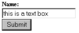
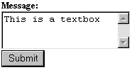
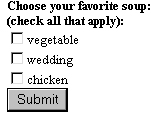
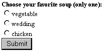
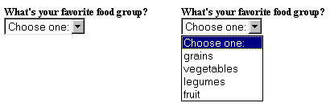
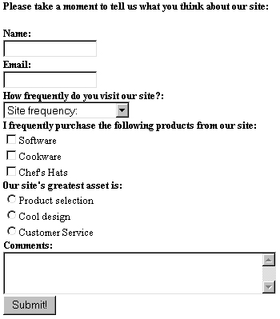
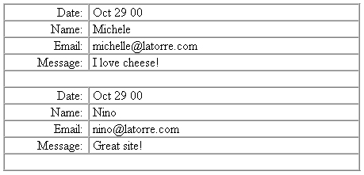

ГЛАВА 10
Формы
Получение и обработка данных, введенных пользователем, стали неотъемлемой частью большинства успешных web-сайтов. Бесспорно, возможности накопления статистики, проведения опросов, хранения персональных настроек и поиска выводят Web на принципиально новый уровень — без них эта среда обладала бы минимальной интерактивностью.
Ввод информации в основном реализуется с применением форм HTML. Несомненно, вы хорошо знакомы с принципами работы форм HTML. Как правило, пользователь заполняет в форме одно или несколько полей (например, имя и адрес электронной почты), нажимает кнопку отправки данных, после чего получает ответное сообщение.
Возможно, вы полагаете, что сбор пользовательских данных в формах HTML — процесс сложный и утомительный. В действительности эта задача решается на удивление просто.
При вводе данных в форму используются различные управляющие элементы. В одних элементах пользователь вводит информацию с клавиатуры, в других он выбирает нужный вариант, щелкая кнопкой мыши. В формах могут присутствовать скрытые поля, которые поддерживаются самой формой; содержимое скрытых полей не должно изменяться пользователем.
Одна страница может содержать несколько форм, поэтому необходимы средства, которые позволяли бы отличить одну форму от другой. Более того, вы должны как-то сообщить форме, куда следует перейти, когда пользователь выполняет действие с формой (как правило, нажимает кнопку отправки данных). Обе задачи решаются заключением форм в следующие теги HTML:
<form action = действие method = "метод" - элементы формы -</form>
Как видно из приведенного фрагмента, в тегах форм указываются два важных элемента: действие и метод. Действие указывает, какой сценарий должен обрабатывать форму, а метод определяет способ передачи данных этому сценарию. Существует два метода:
 В
этой главе приведена лишь очень краткая
вводная информация по основному син-таксису
форм HTML. Более полную информацию можно
найти в книге А. Хоумера и К. Улмена «Dynamic HTML.
Справочник» (СПб.: Питер, 1999).
В
этой главе приведена лишь очень краткая
вводная информация по основному син-таксису
форм HTML. Более полную информацию можно
найти в книге А. Хоумера и К. Улмена «Dynamic HTML.
Справочник» (СПб.: Питер, 1999).
Элементы форм, ориентированные на ввод с клавиатуры
Наше знакомство с построением форм начнется с элементов, ориентированных на ввод с клавиатуры. Таких элементов всего два — текстовое поле (text box) и текстовая область (text area).
Текстовое поле
В текстовых полях обычно вводится короткая текстовая информация — скажем, адрес электронной почты, почтовый адрес или имя. Синтаксис определения текстового поля:
<input type="text" nате="имя_переменной" size="N" maxlength="N" value="">
Определение текстового поля включает пять атрибутов:
Текстовое поле изображено на рис. 10.1.

Рис. 10.1. Текстовое поле
Особой разновидностью текстовых полей является поле для ввода паролей. Оно работает точно так же, как обычное текстовое поле, однако вводимые символы заменяются звездочками. Чтобы создать в форме поле для ввода паролей, достаточно указать type="password" вместо type="text".
Текстовая область
Текстовая область (text area) используется для ввода несколько больших объемов текста, не ограничивающихся простым именем или адресом электронной почты. Синтаксис определения текстовой области:
<textarea name="имя_переменной" rows="N" cols="N" value=""></textarea>
Определение текстового поля включает три атрибута:
Текстовая область изображена на рис. 10.2.

Рис. 10.2. Текстовая область
Элементы форм, ориентированные на ввод с мыши
В других элементах форм пользователь выбирает один из заранее определенных вариантов при помощи мыши. Я ограничусь описанием флажков, переключателей и раскрывающихся списков.
Флажок
Флажки (checkboxes) используются в ситуациях, когда пользователь выбирает один или несколько вариантов из готового набора — по аналогии с тем, как ставятся «галочки» в анкетах. Синтаксис определения флажка:
<input type="checkbox" name="имя_переменной" valuе="начальное_значение">
Определение флажка включает три атрибута:
Флажок изображен на рис. 10.3.

Рис. 10.3. Флажок
Переключатель
Переключатель (radio button) представляет собой разновидность флажка; он работает практически так же за одним исключением — в любой момент времени в группе может быть установлен лишь один переключатель. Синтаксис определения переключателя:
<input type="radio" name="имя_переменной" value="начальное_значение">
Как видите, синтаксис почти не отличается от определения флажка. Определение переключателя поля включает три атрибута:
Переключатель изображен на рис. 10.4.

Рис. 10.4. Переключатель
Раскрывающийся список
Раскрывающиеся списки особенно удобны в ситуации, когда у вас имеется длинный перечень допустимых вариантов, из которого пользователь должен выбрать один вариант. Как правило, раскрывающиеся списки применяются при работе с относительно большими наборами данных — например, при перечислении американских штатов или стран. Синтаксис определения раскрывающегося списка:
<select name="имя_переменной">
<option valuе="имя_переменной1 ">
<option value="имя_переменной2">
<option value="имя_переменнойЗ">
<option value="имя_переменнойN">
</select>
Определение переключателя поля включает три атрибута:
Раскрывающийся список изображен на рис. 10.5.

Рис. 10.5. Раскрывающийся список
Скрытые поля
Скрытые поля не отображаются в браузере и обычно используются для передачи данных между сценариями. Хотя передача в скрытых полях работает вполне нормально, в РНР существует другое, более удобное средство — сеансовые переменные (см. главу 13). Впрочем, скрытые поля также используются в некоторых ситуациях и потому заслуживают упоминания.
Синтаксис определения скрытого поля практически идентичен синтаксису текстовых полей, отличается только атрибут типа. Поскольку скрытые поля не отображаются в браузере, привести пример на страницах книги невозможно. Синтаксис определения скрытого поля:
<input type="hidden" name="имя_переменной" value="начальное_значение">
Определение скрытого поля включает три атрибута:
Вообще говоря, название этого элемента — скрытое поле — несколько неточно. Хотя скрытые поля не отображаются в браузерах, пользователь может просто выполнить команду View Source и увидеть, какие скрытые значения хранятся в форме.
Кнопка отправки данных
Кнопка отправки данных инициирует действие, заданное атрибутом action тега <form>. Синтаксис определения:
<input type="submit" value="текст_на_кнопке">
Определение кнопки включает два атрибута:
Рис. 10.6. Кнопка отправки данных
Кнопка сброса
Кнопка сброса отменяет все изменения, внесенные в элементы формы. Обычно никто ею не пользуется, однако кнопки сброса так часто встречаются на формах в Web, что я решил привести ее описание. Синтаксис определения:
<input type="reset" value=" текст _на_кнопке">
Определение кнопки включает два атрибута:
Кнопка сброса выглядит точно так же, как и кнопка отправки данных, если не считать того, что на ней обычно выводится слово «Reset» (рис. 10.6).
 Джейкоб
Нильсен (Jakob Nielsen), известный авторитет в
области Web, недавно напи-сал интересную
статью о проблемах, связанных с
использованием кнопки сброса. Статья
опубликована по адресу http://www.useit.com/alertbox/20000416.html.
Джейкоб
Нильсен (Jakob Nielsen), известный авторитет в
области Web, недавно напи-сал интересную
статью о проблемах, связанных с
использованием кнопки сброса. Статья
опубликована по адресу http://www.useit.com/alertbox/20000416.html.
От описания базовых компонентов форм мы переходим к практическому примеру — построению формы для обработки данных, введенных пользователем. Допустим, вы хотите создать форму, в которой пользователь может высказать мнение о вашем Сайте. Пример такой формы приведен в листинге 10.1.
Листинг 10.1. Пример формы для сбора данных
<form action = "process.php" method = "post">
<b>Please take a moment to tell us what you think about our site:</b><p>
<b>Name:</b><br>
<input type="text" name="name" size="15" maxlength="25" value=""><br>
<b>Email:</b><br>
<input type="text" name="email" size="15" maxlength="45" value=""><br>
<b>How frequently do you visit our site?:</b><br>
<select name="frequency">
<option value="">Site frequency:
<option value="0">This is my first time
<option value="l">< 1 time a month
<option value="2">Roughly once a month
<option value="3">Several times a week
<option value="4">Every day
<option va1ue-"5">I'm addicted
</select><br>
<b>I frequently purchase the following products from our site:</b><br>
<input type="checkbox" name="software" value="software">Software<br>
<input type="checkbox" name="cookware" value="cookware">Cookware<br>
<input type="checkbox" name="hats" value="hats">Chef's Hats<br>
<b>0ur site's greatest asset is:</b><br>
<input type="radio" name="asset" value="products">Product selection<br>
<input type="radio" name="asset" value="design">Cool design<br>
<input type="radio" name="asset" value="service">Customer Service<br>
<b>Comments:</b><br>
<textarea name="comments" rows="3" cols="40"></textarea><br>
<input type="submit" value="Submit!">
</form>
Внешний вид формы в браузере изображен на рис. 10.7.

Рис. 10.7. Пример формы для ввода данных
Вроде бы все понятно. Возникает вопрос — как получить данные, введенные пользователем, и сделать с ними что-нибудь полезное? Этой теме посвящен следующий раздел, «Формы и РНР».
Не забывайте: все сказанное ранее — не более чем вводный курс. Приведенная информация ни в коем случае не исчерпывает всех возможностей, предоставляемых различными компонентами форм. За дополнительной информацией обращайтесь к многочисленным учебникам по работе с формами, опубликованным в Web, а также книгам по HTML.
От предварительного знакомства с формами HTML мы переходим к самому интересному — применению РНР для обработки данных, введенных пользователем в форме.
Обработка данных в формах имеет много общего с обработкой переменных, передаваемых в URL, — эта тема подробно рассматривалась в предыдущей главе.
Следующие практические примеры помогут вам быстрее освоить различные аспекты обработки форм в РНР. В этих примерах продемонстрированы разные подходы к реализации интерактивных возможностей на сайте.
Пример 1: передача данных формы из одного сценария в другой
В первом примере представлена характерная ситуация — когда пользовательские данные вводятся на одной странице и отображаются на другой. В листинге 10.2 приведен код формы для ввода имени пользователя и адреса электронной почты. Когда пользователь щелкает на кнопке отправки данных (кнопка Go!), форма обращается к странице, приведенной в листинге 10.3. В свою очередь, листинг 10.3 выводит переменные $name и $mail, переданные с запросом.
Листинг 10.2. Простая форма
<html>
<head>
<title>Listing 10-2</title>
</head>
<body bgcolor="#ffffff" text="#000000" link="#cbda74" vlink="#808040" alink="#808040">
<form action="listingl0-3.php" method="post">
<b>Give us some information!</b><br>
Your Name:<br>
<input type="text" name="name" size="20" maxlength="20" value=""><br>
Your Email:<br>
<input type="text" name="email" size="20" maxlength="40" value=""><br>
<input type="submit" value="go!">
</form>
</body> </html>
Листинг 10.3. Отображение данных, введенных в листинге 10.1
<html> <head>
<title>Listing 10-3</title>
</head>
<body bgcolor="#ffffff" text="#000000" link="#cbda74" vlink="#808040" alink="#808040">
<?
// Вывести имя и адрес электронной почты.
print "Hi. $name!. Your email address is $email";
?>
</body> </html>
В общих чертах происходит следующее: пользователь заполняет поля формы и нажимает кнопку отправки данных. Управление передается странице, приведенной в листинге 10.3, где происходит форматирование и последующее отображение данных. Как видите, все просто.
Существует и другой способ обработки данных форм, при котором используется всего один сценарий. К недостаткам этого способа относятся увеличение сценария и как следствие — затруднения с редактированием и сопровождением. Впрочем, есть и достоинства — уменьшение количества файлов, с которыми вам приходится работать. Более того, в этом варианте сокращается избыточный код при проверке ошибок (эта тема рассматривается ниже в данной главе). Конечно, в некоторых ситуациях работать с одним сценарием неудобно, но, по крайней мере, вы должны знать об этой возможности. В примере 2 воспроизводится пример 1, но с использованием лишь одного сценария.
Пример 2: альтернативная обработка формы (с одним сценарием)
Обработка данных формы в одном сценарии реализуется относительно просто. Вы проверяете, были ли присвоены значения переменным формы. Если значения присвоены, сценарий обрабатывает их (в нашем примере — просто выводит), а если нет — отображает форму. Решение о том, было ли задано значение переменной или нет, принимается при помощи функции strcmp( ), описанной в главе 8. Пример реализации формы с одним сценарием приведен в листинге 10.4. Обратите внимание: атрибут action формы ссылается на ту же страницу, в которой определяется сама форма. Условная команда i f проверяет состояние переменной скрытого поля с именем $seenform. Если значение $seenform не задано, форма отображается в браузере, а если задано — значит, форма была заполнена пользователем и введенные данные обрабатываются сценарием (в данном примере — просто выводятся в браузере).
Листинг 10.4. Ввод данных на форме в одном сценарии
<html>
<head>
<title>Listing 10-4</title>
</head>
<body bgcolor="#ffffff" text="#000000" link="#cbda74" vlink="#808040" alink="f808040">
<?
// Все кавычки внутри $form должны экранироваться,
// в противном случае произойдет ошибка.
$form = "
<form action=\"listing10-4.php\" method=\"post\">
<input type=\"hidden\" name=\"seenform\" value=\"y\">
<b>Give us some information!</b><br>
Your Name:<br>
<input type=\"text\" name=\"name\" size=\"20\" maxlength=\"20\" value=\"\"><br>
Your Email:<br>
<input type=\"text\" name=\"email\" size=\"20\" maxlength=\"40\" value=\"\"><br>
<input type=\"submit\" value=\"subscribe!\">
</form>";
// Если форма ранее не отображалась, отобразить ее.
// Для проверки используется значение скрытой переменной $seenform.
if ($seenform != "у"):
print "$form";
else :
print "Hi. $name!. Your email address is $email";
endif;
?>
</body>
</html>
Учтите, что этот вариант создает определенные неудобства, поскольку при повторной загрузке страницы пользователь ничего не узнает о том, правильно ли были заполнены поля формы. Процедура проверки ошибок рассматривается далее в этой главе, а пока достаточно запомнить, что ввод данных можно осуществить при помощи одного сценария.
Теперь, когда вы представляете, как просто выполняются операции с формами, мы переходим к интересному примеру — автоматической отправке данных пользователя по заданному адресу электронной почты. Эта возможность реализована в примере 3.
Пример 3: автоматическая отправка данных по электронной почте
Вывести пользовательские данные в браузере несложно, но вряд ли это можно назвать содержательной обработкой пользовательского ввода. Один из способов обработки информации заключается в ее отправке по электронной почте — например, администратору сайта. Хотя при помощи гиперссылки mailto: можно отправить сообщение прямо из браузера, следует учитывать, что внешние приложения электронной почты настроены не на каждом компьютере. Следовательно, отправка сообщений с web-формы более надежно гарантирует, что сообщение будет доставлено адресату.
В следующем разделе, mail( ), создается небольшая форма, в которой пользователь вводит информацию и комментарии по поводу сайта. Затем данные форматируются соответствующим образом и передаются стандартной функции РНР mail( ). Но прежде чем переходить к построению формы, необходимо предварительно рассмотреть синтаксис функции mail( ).
mail ( )
Функция mail( ) отправляет сообщение заданному адресату по электронной почте. Синтаксис функции mail( ):
boolean mail (string получатель, string тема, string сообщение [, string доп_заголовки])
В параметре тема, как нетрудно предположить, передается тема сообщения. Параметр сообщение содержит текст сообщения, а необязательный параметр доп_за головки предназначен для включения дополнительной информации (например, атрибутов форматирования HTML), пересылаемой с сообщением.
 В
системе UNIX функция mail( ) использует утилиту
sendmail. В Windows эта функция работает лишь при
наличии установленного почтового сервера
или если функция mail( ) связана с работающим
сервером SMTP. Эта задача решается
модификацией переменной SMTP в файле php.ini.
В
системе UNIX функция mail( ) использует утилиту
sendmail. В Windows эта функция работает лишь при
наличии установленного почтового сервера
или если функция mail( ) связана с работающим
сервером SMTP. Эта задача решается
модификацией переменной SMTP в файле php.ini.
Если вы сделали все необходимое и функция mail( ) работает в вашей системе, попробуйте выполнить следующий фрагмент (конечно, адрес youraddress@yourserver.com заменяется вашим настоящим адресом электронной почты):
$email = "youraddress@yourserver.com";
$subject = "This is the subject";
$message = "This is the message";
$headers = "From: somebody@somesite.com";
mail ($email, $subject, $message, $headers);
Хотя при обширной переписке, конечно, следует использовать специализированные почтовые программы вроде majordomo (http://www.greatcircle.com/majordomo), в простых случаях функции РНР mail( ) оказывается вполне достаточно.
Итак, после знакомства с функцией mail( ) можно применить ее на практике. В листинге 10.5 показано, как получить информацию от пользователя и отправить ее по адресу, заданному администратором сценария.
Листинг 10.5. Пересылка пользовательских данных функцией mail( )
<html>
<head>
<title>Listing 10-5</title>
</head>
<body bgcolor="#ffffff" text="#000000" link="#cbda74" vlink="#808040" alink="#808040">
// Все кавычки внутри $form должны экранироваться.
// в противном случае произойдет ошибка.
$form = "
<form action=\"listing10-5.php\" method=\"post\">
<input type=\"hidden\" name=\"seenform\" value=\"y\">
<b>Send us your comments!</b><br>
Your Name:<br>
<input type=\"text\" name=\"name\" size=\"20\" maxlength=\"20\" value=\"\"><br>
Your Email:<br>
<input type=\"text\" name-\"email\" size=\"20\" maxlength=\"40\" value=\"\"><br>
Your Comments:<br>
<textarea name=\"comments\" rows=\"3\" cols=\"30\"></textarea><br>
<input type=\"submit\" value=\"submit!\">
</form>
// Если форма ранее не отображалась, отобразить ее.
// Для проверки используется значение скрытой переменной $seenform.
if ($seenform != "у") :
print "$form"; else :
// Переменная $recipient определяет получателя данных формы
$recipient = "yourname@youremail.com";
// Тема сообщения
$subject = "User Comments ($name)";
// Дополнительные заголовки $headers = "From: $email";
// Отправить сообщение или выдать сообщение об ошибке
mail($recipient, $subject, $comments, $headers) or die("Could not send email!");
// Вывести сообщение для пользователя
print "Thank you $name for taking a moment to send us your comments!";
endif;
?>
</body>
</html>
Неплохо, правда? Листинг 10.5 работает так же, как листинг 10.4; сначала мы проверяем, отображалась ли форма ранее. Если это происходило, программа вызывает функцию mail( ) и пользовательские данные отправляются по адресу, определяемому переменной $recipient. Затем в браузере выводится благодарственное сообщение для пользователя.
Простейшим расширением этого примера будет отправка благодарственного сообщения по электронной почте (вторым вызовом mail( )). Следующий пример развивает эту идею — пользователю предлагается на выбор несколько бюллетеней. Выбранные бюллетени отправляются по электронной почте.
Пример 4: отправка запрашиваемой информации по электронной почте
В этом примере в форме создается несколько флажков, каждый из которых соответствует отдельному документу с информацией о сайте. Пользователь устанавливает один, два или три флажка, вводит свой адрес, и запрашиваемые брошюры отправляются ему по электронной почте. Обратите внимание на применение массива при работе с флажками — это упрощает проверку выбранных флажков, а также улучшает структуру программы.
Информационные сообщения хранятся в отдельных файлах. В нашем примере используются три текстовых файла:
Исходный текст примера приведен в листинге 10.6.
Листинг 10.6.Отправка информации, запрашиваемой пользователем
<html>
<head>
<title>Listing10-5</title>
</head>
<body bgcolor="#ffffff" text="#000000" link="#cbda74" vlink="#808040" alink="#808040">
<?
$form = "
<form action=\"Listing10-6.php\" method=\"post\">
<input type=\"hidden\" name=\"seenform\" value=\"y\">
<b>Receive information about our site!</b><br>
Your Email:<br>
<input type=\"text\" name=\"email\" size=\"20\" maxlength=\"40\" value=\"\"><br>
<input type=\"checkbox\" name=\"information[site]\" value=\"y\">Site Architecture<br>
<input type=\"checkbox\" name=\"information[team]\" value=\"y\">Development Team<br>
<input type=\"checkbox\" name=\"information[events]\" value=\"y\">Upcoming Events<br>
<input type=\"submit\" value=\"send it to me!\">
</form>":
if ($seenform != "y") :
print "$form"; else :
$headers = "From: devteam@yoursite.com";
// Перебрать все пары "ключ/значение"
while ( list($key, Sval) = each ($information) ) :
// Сравнить текущее значение с "у" if ($val == "у") :
// Построить имя файла, соответствующее текущему ключу
$filename = "$key.txt":
$subject = "Requested $key information";
// Открыть файл
$fd = fopen ($filename, "r");
// Прочитать содержимое всего файла в переменную $contents = fread ($fd. filesize ($filename));
// Отправить сообщение
mail($email, $subject, $contents, $headers) or die("Can't send email!");; fclose($fd);
endif;
endwhile;
// Известить пользователя об успешной отправке
print sizeof($information)." informational newsletters
have been sent to $email!";
endif;
?>
</body>
</html>
В листинге 10.6 мы перебираем пары «ключ/значение» в цикле while и отправляем только те бюллетени, у которых значение равно у. Следует помнить, что имена текстовых файлов должны соответствовать ключам массива
(site.txt, team.txt и events.txt). Имя файла строится динамически по ключу, после чего файл открывается по имени и его содержимое загружается в переменную ($contents). Затем переменная $contents передается функции mail( ) в качестве параметра.
В следующем примере пользовательские данные сохраняются в текстовом файле.
Пример 5: сохранение пользовательских данных в текстовом файле
Пользовательские данные сохраняются в текстовом файле для последующего статистического анализа, поиска и т. д. — короче, любой обработки по вашему усмотрению. В листинге 10.7, как и в предыдущих примерах, данные формы обрабатываются в одном сценарии. Пользователю предлагается ввести четыре объекта данных: имя, адрес электронной почты, язык и профессию. Введенная информация сохраняется в текстовом файле user_information.txt. Элементы данных разделяются символами «вертикальная черта» (|).
Листинг 10.7. Сохранение пользовательской информации в текстовом файле
<html>
<head>
<titlexisting 10-7</title>
</head>
<body bgcolor="#ffffff" text="#000000" link="#cbda74" vlink="#808040" alink="#808040">
<?
// Создать форму
$form = "
<form action=\"Listing10-7.php\" method=\"post\">
<input type=\"hidden\" name=\"seenform\" value=\"y\">
<b>Give us your personal info!</fb><br>
Your Name:<br>
<input type=\"text\" name=\"name\" size=\"20\" maxlength=\"20\" value=\"\"><br>
Your Email:<br>
<input type=\"text\" name"=\"email\" size=\"20\" maxlength=\"20\" value=\"\"><br>
Your Preferred Language:<br>
<select name=\"language\">
<option value=\"\">Choose a language:
<option value=\"English\">English
<option value=\"Spanish\">Spanish
<option value=\"Italian\">Italian
<option value=\"French\">French
<option value=\"Japanese\">Japanese
<option value=\"newyork\">NewYork-ese
</select><br>
Your Occupation:'"ibr>
<select name=\"job\">
<option value=\"\">What do you do?:
<option value=\"student\">Student
<option value=\ "programmed ">Programmer
<option value=\"manager\">Project Manager
<option value=\"slacker\">Slacker
<option value=\"chef\">Gourmet Chef
</select><br>
<input type=\"submit\" value=\"submit!\">
</form>";
// Заполнялась ли форма ранее? if ($seenform != "у") :
print "$form"; else :
$fd = fopen("useMnformation.txt", "a");
// Убедиться, что во введенных данных не встречается
// вертикальная черта.
$name = str_replace("|", "", $name);
$email = str_replace("|", "", $email);
// Построить строку с пользовательскими данными
$user_row = $name." ".$email."|".$language." ".$job."\n";
fwrite($fd, $user_row) or die("Could not write to file!");
fclose($fd);
print "Thank you for taking a moment to fill out our brief questionnaire!":
endif;
?>
</body>
</html>
Обратите внимание на фрагмент, в котором мы проверяем, что пользователь не включил в имя или адрес электронной почты символы «вертикальная черта» (|). Функция str_replace( ) удаляет эти символы, заменяя их пустой строкой. Если бы это не было сделано, пользовательские символы | нарушили бы структуру файла данных и существенно затруднили (а то и сделали невозможным) его правильную обработку.
При работе с относительно малыми объемами информации вполне можно обойтись текстовыми файлами. Однако при большом количестве пользователей или объеме сохраняемой информации для хранения и обработки данных, введенных в форме, лучше воспользоваться базой данных. Эта тема подробно рассматривается в главе 11.
До настоящего момента предполагалось, что пользователь всегда вводит правильные данные и не действует злонамеренно. В высшей степени оптимистичное предположение! В следующем разделе мы усовершенствуем рассмотренные примеры и организуем проверку целостности данных форм. Проверка ошибок не только обеспечивает удаление неполной и неправильной информации, но и обеспечивает более эффективный и удобный интерфейс.
Обработка пользовательских данных дает осмысленный результат лишь в том случае, если данные имеют правильную структуру. Проверить достоверность введенных данных невозможно, однако вы можете проверить их целостность (например, убедиться в том, что адрес электронной почты соответствует стандартному шаблону). Хотя для проверки данных часто применяется технология JavaScript, могут возникнуть проблемы с несовместимостью браузеров. Поскольку код РНР выполняется на стороне сервера, вы всегда можете быть уверены в том, что проверка данных формы даст нужный результат (конечно, при условии правильности вашей программы).
При обнаружении ошибки в данных необходимо сообщить об этом пользователю и предложить внести исправления. Существует несколько возможных решений, в том числе простой вывод сообщения об ошибке и предложение альтернативных вариантов (например, если пользователь выбирает имя, которое уже было выбрано другим пользователем). В этом разделе рассматривается процедура проверки и вывода сообщений,
Пример 6: вывод информации о пустых или ошибочно заполненных полях формы
Ни один разработчик сайта не захочет раздражать пользователя невразумительными сообщениями об ошибках в данных — особенно если пользователь запрашивает дополнительную информацию о товаре или оформляет покупку! Чтобы пользователь понял, какие поля формы остались пустыми или были заполнены неверно, сообщения должны быть четкими и конкретными.
Мы последовательно проверяем все поля формы и убеждаемся в том, что они не остались пустыми. Там, где это возможно, проверяется правильность структуры введенных данных. Если проверка прошла успешно, мы переходим к следующему полю; в противном случае программа выводит сообщение об ошибке, устанавливает флаг, который позднее используется для повторного отображения формы, и переходит к следующему полю. Процедура повторяется до тех пор, пока не будут проверены все поля формы (листинг 10.8).
Листинг 10.8. Проверка данных формы и вывод сообщений об ошибках
<html>
<head>
<title>Listing 10-8</title>
</head>
<body bgcolor="#ffffff" text="#000000" link="#cbda74" vlink="#808040" alink="#808040">
<?
// Создать форму
$form = "
<form action=\"Listing10-8.php\" method=\"post\">
<input type=\"hidden\" name=\"seenform\" value=\"y\">
<b>Give us some information!</b><br>
Your Name:<br>
<input type=\"text\" name=\"name\" size=\"20\" maxlength=\"20\" value=\"$name\"><br>
Your Email:<br>
<input type=\"text\" name=\"email\" s1ze=\"20\" maxlength=\"40\" value=\"$email\"><br>
<input type=\"submit\" value=\"subscribe!\">
</form>":
// Заполнялась ли форма ранее?
if ($seenform != "у"):
print "$form";
// Пользователь заполнил форму. Проверить введенные данные, else :
$error_flag = "n";
// Убедиться в том. что поле имени содержит информацию
if ($name == "") :
print "<font color=\"red\">* You forgot to enter your name!
</font> <br>":
$error_flag = "y";
endif:
// Убедиться в том. что поле адреса содержит информацию
if ($email == "") :
else :
print "<font color=\"red\">* You forgot to enter your email !
</font> <br>"
$error_flag = "y";
// Преобразовать все алфавитные символы в адресе
// электронной почты к нижнему регистру
$email = strtolower(trim($email)):
// Убедиться в правильности синтаксиса
// адреса электронной почты
if (! @eregi('^[0-9a-z]+'.
'([0-9a-z-]+\.)+'.
'([0-9a-z]){2.4}$'. $email)) :
print "<font color=\"red\">* You entered an invalid email address!
</font> <br>" :
$error_flag = "y";
endif;
endif;
// Если флаг ошибки $error_flag установлен.
// заново отобразить форму
if ($error_flag == "у") : print "$form";
else :
// Обработать данные пользователя
print "You entered valid form information!";
endif;
endif;
?>
</body>
</html>
Программа в листинге 10.8 убеждается в том, что поля имени и адреса электронной почты не остались пустыми, а также проверяет правильность синтаксиса вве-, денного адреса. Если в результате каких-либо проверок в форме обнаруживаются ошибки, программа выводит соответствующие сообщения и отображает форму заново — при этом вся введенная ранее информация остается в форме, благодаря чему пользователю будет проще внести исправления. Если вывести пустую форму и предложить пользователю заполнить ее заново, он может отправиться
за необходимым товаром или услугой в другое место.
Динамическое конструирование форм
До настоящего момента я программировал все формы вручную. Любому программисту известно, что ручное кодирование — это плохо, поскольку оно увеличивает вероятность ошибок, не говоря уже о лишних затратах времени.
В следующем разделе я представлю сценарий, в котором раскрывающийся список строится динамически по содержимому массива. Этот прием несложен, однако
он экономит немало времени как при исходном программировании, так и при последующем сопровождении программы.
Пример 7: построение раскрывающегося списка
Предположим, у вас имеется список сайтов, которые вы хотите порекомендовать посетителю из-за классного дизайна. Вместо того чтобы жестко кодировать каждую строку списка, можно создать массив и воспользоваться его содержимым для заполнения списка.
В листинге 10.9, как и в предыдущих примерах, реализован вариант с одним сценарием. Сначала мы проверяем, было ли присвоено значение переменной $site. Если проверка дает положительный результат, вызывается функция header( ) с параметром, в котором значение $site присоединяется к строке «Location:http://». При передаче этой команды функция header О перенаправляет браузер на указанный URL. Если значение переменной $site не задано, форма выводится в браузере. Раскрывающийся список строится в цикле, количество итераций зависит от размера массива Sfavsites. В листинге 10.9 я включил в этот массив пять своих любимых сайтов. Конечно, вы можете добавить в него сколько угодно своих сайтов.
Запомните одно важное обстоятельство — функция header( ) должна вызываться до вывода данных в браузере. Ее нельзя просто вызвать в любой точке сценария РНР. Несвоевременные вызовы header( ) порождают столько проблем у неопытных программистов РНР, что я рекомендую повторить это правило раз пять, чтобы лучше запомнить его.
Листинг 10.9. Динамическое построение раскрывающегося списка
<?
if ($site != "") :
header("Location: http://Ssite");
exit;
else :
?>
<html>
<head>
<title>Listing 10-9</Fit1e>
</head>
<body bgcolor="#ffffff" text="#000000" Iink="#cbda74" vlink="#808040" alink="#808040"
$favsites = array ("www.k10k.com". "www.yahoo.com",
"www.drudgereport.com",
"www.phprecipes.com",
"www.frogdesign.com"):
// Создать форму
<?
<form action = "Listing10-9.php" method="post">
<select name="site">
<option value = "">Choose a site:
$х = 0:
while ( $х < sizeof ($favsites) ) :
print "<option value='$favsites[$x]'>$favsites[$x]";
$x++;
endwhile;
?>
</select>
<input type="submit" value="go!">
</form>
<?
endif;
?>
Динамическое конструирование форм особенно удобно при обработке больших объемов данных, которые в любой момент могут измениться, что приведет к устареванию всей жестко закодированной информации форм. Впрочем, я рекомендую жестко кодировать все статические данные (например, список штатов США), поскольку это ускорит работу программы.
С первых дней World Wide Web разработчики сайтов стремились к тому, чтобы посетители могли поделиться своими мыслями и комментариями по поводу сайта. На сайтах эта возможность обычно называется «гостевой книгой» (guestbook). Я покажу, как легко создать гостевую книгу при помощи форм HTML, средств обработки форм РНР и текстового файла.
Прежде всего создается инициализационный файл, содержащий некоторые глобальные переменные и функции приложения (листинг 10.10).
Листинг 10.10. Файл init.inc, используемый при создании гостевой книги
<?
// Файл: init.inc
// Назначение: глобальные переменные и функции для проекта гостевой книги
// Заголовок страницы по умолчанию
$title = "My Guestbook";
// Цвет фона
$bg_color = "white": /
// Гарнитура шрифта
$font_face = "Arial, Verdana, Times New Roman";
// Цвет шрифта
$font_color = "black";
// Дата отправки $post_date - date("M d y");
// Файл данных гостевой книги
$guest_file = "comments.txt";
// Функция читает данные гостевой книги
//и отображает их в браузере
function view_guest($guest_file) {
GLOBAL $font_face, $font_color;
print "Return to <a href=\"index.php\">index</a>,<br><br>";
// Если в файле гостевой книги имеются данные...
if (filesize($guest_file) > 0) :
// Открыть файл данных гостевой книги
$fh = fopen($guest_file. "r") or die("Couldn't open $guest_file");
print "<table border=1 cellpadding=2 cellspacing=0 width=\"600\">";
// Повторять до конца файла
while (! feof($fh)) :
// Прочитать следующую строку
$line <= fgetsdfh, 4096);
// Разбить строку на компоненты
// и присвоить каждый компонент переменной
list($date. $name, $email, $comments) = explode("|", $line):
// Если указано имя посетителя, вывести его
if ($name != "") :
print "<tr>":
print "<td><font color=\"$font_co!or\"
face=\"$font_face\">Date:</font></td>";
print "<td><font color=\"$font_color\"
face=\"$font_face\">$date</font></td>";
print "</tr>";
print "<tr>";
print "<td><font color=\"$font_color\"
face=\"$font_face\">Name:</font></td>";
print "<td><font color=\"$font_color\"
face=\"$font_face\">$name</font></td>";
print "</tr>";
print "<tr>";
print "<td><font color=\"$font_color\"
face=\"$font_face\">Email:</font></td>";
print "<td><font color=\"$font_color\"
face=\"$font_face\">$email</font></td>";
print "</tr>";
print "<tr>";
print "<td valign=\'top\"><font color=\"$font_color\"
face=\"$font_face\">Message:</font></td>";
print "<td><font color=\"$font_color\"
face=\"$font_face\">$comments</font></td>";
print "</tr>";
print "<tr><td colspan=\"2\"> :</td></tr>";
endif;
endwhile;
print "</table>";
// Закрыть файл
fclose($fh);
else :
print "<h3>Currently there are no entries in the guestbook!</h3>";
endif;
} // view_guest
// Функция сохраняет новую информацию в файле данных
function add_guest($name, $email, $comments) {
GLOBAL $post_date, $guest_file;
// Отформатировать данные для ввода ,
$contents = "$post_date|$name|$email |$comments\n";
// Открыть файл данных
$fh = fopen($guest_file. "a") or dieC'Could not open $guest_file!");
// Записать данные в файл
$wr = fwrite($fh, $contents) or die("Could not write to $guest_file!");
// Закрыть файл fclose($fh);
} // add_guest
?>
Затем создаются еще три файла: файл ссылок index.php, файл add_guest.php для вывода информации гостевой книги и файл view_guest.php для ввода новых данных. Файл index.php (листинг 10.11) просто отображает две ссылки для выполнения основных функций гостевой книги — просмотра и добавления новых данных. Эти ссылки легко включаются в сайт, имеющий более сложную структуру.
Листинг 10.11. Файл index.php со ссылками для просмотра и добавления новых данных в гостевую книгу
<html>
<?
INCLUDE("init.inc");
?>
<head>
<title><?=$page_title;?></title>
</head>
<body bgcolor="<?=$bg_color;?>" text="#000000" link="#808040" vlink="#808040" alink="#808040">
<a href="view_guest.php">View the guestbook!</a><br>
<a href="add_guest.php">Sign the guestbook!</a><br>
</body>
</html>
Файл view_guest.php (листинг 10.12) выводит всю информацию гостевой книги, хранящуюся в файле данных.
Листинг 10.12. Файл view_guest.php
<html>
<?
INCLUDE("init.inc");
?>
<head>
<t1tle><?=$page_title;?></t1tle>
</head>
<body bgcolor="<?=$bg_color:?>" text="#000000" link=" vlink="#808040" alink="#808040">
vi ew_guest ( $guest_file );
?>
Файл add_guest.php (листинг 10.13) запрашивает у пользователя новые данные для внесения в гостевую книгу. Введенная информация записывается в файл данных.
Листинг 10.13. Файл add_guest.php
<html>
<?
INCLUDE("init.inc");
?>
<head>
<title><?=$page_title:?></title>
</head>
<body bgcolor="#ffffff" text="#000000" link="#808040" vlink="#808040" alink="#808040">
?<
// Если форма еще не отображалась - запросить данные у пользователя
if (! $seenform) :
?>
<form action="add_guest.php" method="post">
<input type="hidden" name="seenform" value="y">
Name:<br>
<input type="text" name="name" size="15" maxlength="30" value=""><br>
Email:<br>
<input type="text" name="email" size="15" maxlength="35" value=""><br>
Comment: <br>
<textarea name="comment" rows="'3" cols="40"></textarea><br>
<input type="submit" value="submit">
</form>
// Форма уже отображалась - добавить данные в текстовый файл.
else :
add_guest($name, $email, $comment);
print "<h3>Your comments have been added to the guestbook.
<a href=\"index.php\">Click here</a> to return to the index. </h3>";
endif;
?>
К числу основных преимуществ модульной разработки приложений относится простота адаптации для других систем. Допустим, вы решили перейти от хранения данных в текстовом файле к использованию базы данных. Стоит изменить содержимое add_guest( ) и view_guest( ), и ваша гостевая книга перейдет на работу с базой данных.
На рис. 10.8 показано, как выглядит гостевая книга после сохранения пары записей.

Рис. 10.8. Просмотр гостевой книги (view_guest.php)
Информация, показанная на рис. 10.8, хранится в файле данных в следующем виде:
Oct 29 00|Michele|michelle@latorre.com|I love cheese!
Oct 29 00|Nino|nino@latorre.com|Great site!
Обработка данных форм принадлежит к числу сильнейших сторон РНР, поскольку простота и надежность сочетаются в ней с одним из важнейших аспектов любого сайта — интерактивностью. В этой главе рассматривался широкий круг вопросов, относящихся к формам и роли РНР в обработке данных форм, в том числе:
Если вы собираетесь работать со сколько-нибудь заметными объемами информации, одним из первых шагов на этом пути должна стать интеграция базы данных в структуру сайта. Эта тема рассматривается в следующей главе.